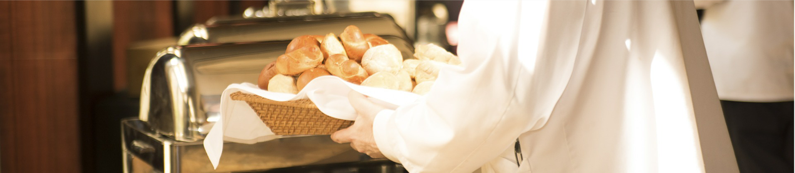
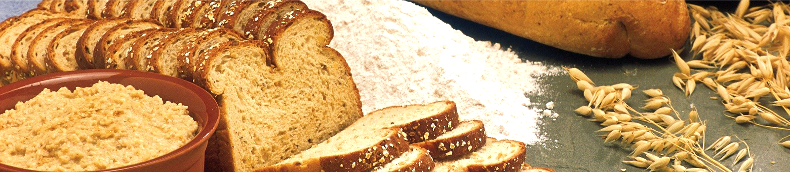
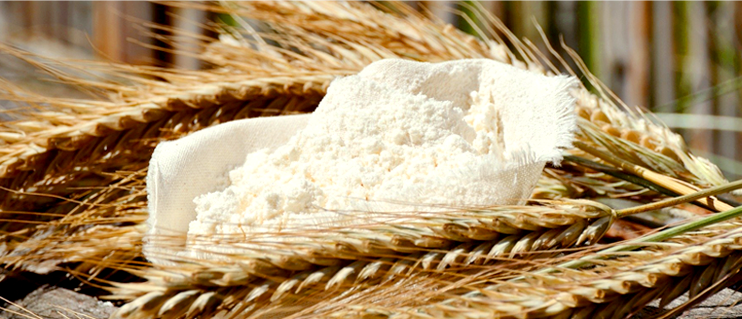
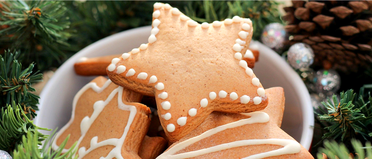

서브 내용

노노베이커리의 시작
안녕하세요
건강하고 맛있는 빵을 만들기 위해 끊임없이 노력하고 연구하는 노노베키어리의 제빵사 노노입니다
노노베이커리는 저의 고민과 문제 해결로 시작한 빵집이에요
영양사들은 적당량의 빵을 섭취하는 것이 좋다고 조언해요. 음식 피라미드에서 여러 가지 영양분이 함유되어 있는 식품이기 때문이죠 그렇지만 빵을 먹으면 정말 살이 찌는 것 일까요? 빵은 다이어트할 때 피해야하는 음식 중 하나에요 왜냐하면 칼로리는 높지만 포만감은 크지 않다는 점 때문이죠 개인의 신체에 따라 살이 찌는 정도는 달라질 수 있지만 빵 30 mg은 약 80 kcal이기 때문에 적당량만 섭취해야 해요. 과도하게 섭취하면 살을 찌게 만드는 건강에 좋지 않은 식품으로 간주될 수 있어요.
또, 빵에는 다이어트에 도움이 되지 않는 글루텐, 전분, 밀가루가 함유되어 있어요 이 복합탄수화물들은 빠르게 혈당을 올려서 제2형 당뇨병의 위험을 높여줘요 글루텐은 빵을 구울 때 부풀어 오르게 하는 역할을 하지만 선천적 · 유전적인 이유로 글루텐을 섭취하면 잦은 설사나 복부불편감, 팽만감이 나타나는 분들도 있어요 하지만 먹고싶은 욕구를 계속 참는 것도 한계가 있어요 억지로 참다보면 자제력을 잃기 쉬워지고, 먹은 후에도 부족한 포만감과 만족스럽지 않은 기분을 느끼곤해요 심한 경우엔 과식과 폭식으로 이어지고 먹은 후에도 죄책감과 후회감 때문에 더 스트레스를 받을 수 있어요 음식과 다이어트에 얽매여서 삶이 망가지는 거죠
그래서 노노는 다이어트할 때도 안심하고 먹을 수 있는 빵, 건강을 해치지 않으면서 맛도 있는 빵, 안심하고 먹을 수 있는 빵을 만들기 위해 연구하고 또 노력했어요

노노베이커리의 원칙
시작은 단순했지만 고민은 깊었어요
이 고민은 칼로리냐 GI(Glycemic Index: 당지수), GL(Glycemic load: 당부하지수)냐의 고민으로도 연결되었죠
하지만 언제나 해답은 있었어요 빵이라고 다 안 좋은 것은 아니라는 사실을 알게되었거든요
호밀빵은 쌀밥보다 GI과 GL 지수가 모두 낮아 다이어트할 때 먹어도 괜찮은 식품이에요 체내에서 당으로 분해되는 속도가 늦으므로, 그 시간에 에너지 소모가 일어나게 되고, 혈당수치가 천천히 올라가게 되므로, 결국 지방으로 전환될 여지가 적다는 것이였죠
통밀은 인슐린 수치를 낮춰주는 효과가 있어요 특히 하루종일 앉아있는 현대인들은 복부지방 때문에 많은 걱정을 안고 있는데요 이 복부지방 제거에 도움을 줄 수 있어요 또, 식이섬유, 미네랄, 비타민과 같은 영양소가 풍부해서 혈당 지수도 낮춰준답니다
그래서 노노는 일반적으로 볼 수 있는 부드럽고 달콤한 빵이 아닌 거칠고 투박한 빵을 만들기로 결심했어요
밀가루 대신 국내산 통밀가루와 아몬드가루를 사용해 반죽을 만들고, 설탕 대신 설탕대체제인 말티콜이나 말린 과일을 사용해 단맛을 내요
가공버터가 아닌 100% 동물성 버터만 사용하고 있지만 일부 메뉴는 식물성 오일을 사용하기 때문에 채식위주의 식단을 하고계신 분들도 믿고 드실 수 있답니다

원칙1. NO밀가루, NO설탕
밀가루 대신 국내산 통밀가루와 아몬드가루를 사용해
반죽을 만들고 설탕 대신 말티콜이나 말린 과일을 넣어
단맛을 냅니다
때문에 일반적으로 볼 수 있는 빵처럼 부드럽지 않고 거칠고
투박합니다 자연의 섭리 그대로 인위적인 가공을 하지 않았기
때문입니다 하지만 맛에서 뒤떨어지지 않는다고 자부합니다
건강하고 맛있는 식사를 하시길 바랍니다.
원칙2. NO방부제, NO식품첨가물
환경보호와 윤리적인 신념에 따라 완전한 채식을 선택하고
유전적 · 후천적인 이유로 글루텐을 소화하지 못 하는 사람이
있다는걸 알고계시나요?
흔하지 않은 증상이라고 해서 소수를 무시할 순 없다고 생각했
습니다 힘들더라도 더 공부하고 더 연구하면 모두가 맛있게
먹을 수 있는 빵을 만들 수 있다고 굳게 믿고 시작해서 여기까지
왔습니다 오늘도 최상의 재료로 맛있는 빵을 만들겠습니다.
